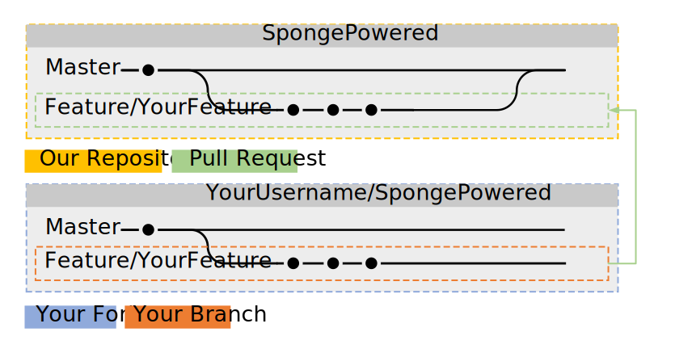

Wie man Git(Hub)t¶
Wenn du beim programmieren von Sponge mithelfen möchtest, eine großartige Idee für die API hast oder unsere Dokumentation verbessern möchtest, dann musst du dich mit Git und GitHub vertraut machen. Wenn du dich bereits mit dem Forken, den Branches, pull-requests und Commits auskennst, dann kannst du diese Seite überspringen. Falls du keine Ahnung hast, was diese Begriffe bedeuten, lies weiter.
Bemerkung
Dieses Tutorial setzt voraus, dass du Git installieren gelesen und das du bereits einen Git-Client deiner Wahl installiert hast.
Das Grundkonzept von Git und GitHub¶
Git ermöglicht die gleichzeitige, gemeinsame Arbeit von vielen Entwicklern an einem einzigen Stück Software. GitHub ist eine Website auf der Entwickler zusammenarbeiten und ihre Arbeit untereinander teilen können. GitHub beruht auf Git, als Tool für die Verwaltung der Projekte.
Tipp
Wenn du mit dem Vokabular von Git und GitHub nicht vertraut bist, kannst du einen Blick auf die Glossar Seite auf GitHub werfen.

In diesem Fall heißt das Repository SpongePowered und beinhaltet die zwei Branches master und feature1 sowie einige Commits in beiden Branches.
Um diese Begriffe in einen Kontext zu setzen - beginnend mit dem Repostiory: Das Repository (kurz: Repo) ist der Ort, an dem alle Dateien eines Projekts gespeichert sind. Die SpongePowered-Repositories befinden sich bei GitHub. Jedoch hat das Repository einige Zugriffseinschränkungen, um es vor unerwünschten oder schädlichen Änderungen zu schützen. Man kann also nicht einfach so selbst Änderungen machen, weil normale Benutzer nur Leserecht für das Repository haben. Jetzt fragen Sie sich vielleicht, wie Sie Vorschläge und Änderungen einreichen sollen. Das ist der Punkt, an dem Forks ins spiel kommen. Sie können einfach eine Kopie der SpongePowered-Repositories machen und dort Ihre Änderungen vornehmen. Wenn Sie fertig sind, öffnen Sie ihr Repository als Pull-Request (PR) bei unserem Repository. Ihre vorgeschlagenen Hinzufügungen und Änderungen können dann angesehen werden und das Personal wird ihnen Bescheid geben, wenn etwas falsch ist oder Verbesserungen benötigt und eventuell sogar den finalen Pull-Request mergen.
Hier eine kurze Zusammenfassung von dem oben beschriebenen Ablauf, bevor wir ins Detail gehen:
- „fork“ (deutsch: „aufgabeln“) der Repository deiner Wahl
- Klone es auf deinen lokalen PC
- Erstelle einen neuen Branch
- Mache die gewünschten Änderungen
- Teste, ob alles funktioniert
- Committe die Änderungen
- Synchronisiere alles mit GitHub
- Schlage die Änderungen in einem Pull-Request in einem unserer Repositories vor
- Ändere deinen PR wenn nötig
- Dein PR wird von den Mitarbeitern in den Master-Branch eingefügt
Einzelheiten bitte!¶
1. Ein Repository „forken“¶
Bemerkung
Dieser Schritt wird nur benötigt, wenn Sie keine Push-Rechte an dem Repository haben, an dem sie arbeiten. Wenn Sie an Ihrem eigenen Repository arbeiten, wird kein Fork benötigt. Dann können Sie diesen Schritt einfach überspringen und direkt klonen. Wenn Sie Änderungen an Sponge vornehmen und nicht kein Mitarbeiter sind, ist dieser Schritt notwendig.
Jetzt, da Sie das grundlegene Konzept kennen, werden wir die Details besprechen. Als erstes müssen Sie das Repository forken, an dem Sie Änderungen vornehmen wollen. Dies kann man auf GitHub.com machen, wo Sie einen Fork-Button am Anfang der Repository-Seite finden werden. Nachdem Sie ihn gedrückt haben, wird GitHub ein bisschen Arbeit verrichten und ihnen ein Duplikat des Originalrepositorys präsentieren. Sie werden feststellen, dass sich das Duplikat jetzt unter ÌhrGitHubAccount/NameDesGeklontenRepository` befindet. Gut, erster Schritt abgeschlossen.
Bemerkung
Alle Branches des orginalen Repositories werden auch geforkt, du wirst ein genaues Abbild der geforkten Repo bekommen.

2. Den Fork auf den lokalen PC klonen¶
Nun müssen Sie diesen Fork auf ihr lokales Gerät downloaden, um Änderungen daran vorzunehmen. Um das zu tun, öffnen Sie einen Git-Client Ihrer Wahl (Git installieren) und klonen Sie den Fork auf ihr lokales Gerät. Der Client wird nach einem Ordner fragen, um alles darin zu speichern. Zweiter Schritt fertig, gut gemacht!
Bemerkung
Due meisten Schritte können über ein GUI deiner Wahl erledigt werden. Falls du mit der Kommandozeile erfahren bist, kannst du sie auch benutzen. Jeder Schritt wird ihnen die benötigten Kommands zeigen, um das gewünschte Ergebnis zu erreichen.
Alternativ kannst du dies über CLI (Command Line Interface, CMD oder Powershell auf Windows) machen. Beache, dass du den Ordner zuerst erstellen musst, bevor alles zu dir geklont wird, bevor du das Kommando eingibst:
git clone git://github.com/YourGitHubAccount/ClonedRepoName.git

3. Einen neuen Branch erstellen¶
Jetzt, da Sie einen lokalen Klon von ihrem Fork haben, ist es an der Zeit, einen Branch zu erstellen, um daran zu arbeiten. Die Branches wurden entworfen, um verschiedene Features oder Ergänzungen gleichzeitig entwickeln und testen zu können, ohne Probleme und Fehler aufgrund von Interferenzen der Zusätze zu verursachen. Es ist streng empfohlen, Änderungen nicht direkt in den master-Branch zu machen. Stattdessen erstellen Sie selbst einen neuen Branch (mit einem sinnvollen Namen) und nehmen Sie dort die Änderungen vor.
Das impliziert, dass wir zuerst einen branch erstellen müssen, als los gehts! Sie können das über ihren Client machen (es sollte dort irgendwo einen create branch-Button geben), oder Sie benutzen das CLI mit Git:
git checkout -b [name_of_your_new_branch]
Das wird einen Branch mit dem Namen deiner Wahl erstellen und auf ihn wechseln. Alle Änderungen, die du jetzt vornimst werden auf deisem Branch gespeichert werden. Wenn sie auf einen anderen Branch (z. B. master) wechseln willst, benutze den selben Befehl. Dritter Schritt abgeschlossen! Gute Arbeit bis jetzt! Um eine Übersicht über deine Branches zu bekommen, benutze einfach deinen Git-Client oder:
git branch

Jetzt ist es an der zeit, Änderungen vorzunehmen. Benutzen Sie den Editor oder die IDE Ihrer Wahl, um das zu tun.
4. Die Änderungen testen¶
Für die SpongeAPI und die Implementierungen müssen sie gradle compileJava ausführen. Fahren Sie mit dem nächsten Schritt fort, wenn es ohne Fehler ausgeführt wird. Wenn nicht, machen Sie die angemessenen Korrigierungen und versuchen Sie es erneut.
Für SpongeDocs können Sie einfach ihr PR einreichen. Diese wird automatisch eingefügt und mögliche Fehler enthüllen. Eine andere Möglichkeit ist es, die Docs lokal zu erstellen. Schauen Sie sich die Readme.md in den Docs für weiterführende Anweisungen an.
5. Einen Commit der die Änderungen enthält erstellen¶
When you’re done, you need to bundle them into a single package (a commit) and get them into the branch. Again, your
git client will help you out. Add a meaningful name to your commit and a short description if needed. This can be done
via CLI too:
Sammeln Sie zuerst alle Dateien, die Sie in einen Commit tun möchten:
git add <file>
git add <folder>
Jetzt, da die Dateien zu Ihrer Liste der Änderungen hinzugefügt sind, die du in den Commit aufgenommen haben willst, tue nur
git commit
Dies wird ein Textfenster öffnen, wo du - falls gewünscht - eine Nachricht hinzufügen kannst. Schau auf das Bild unterhalb. Du wirst bemerken, dass deine Commits immer noch nur lokal gespeichert sind und sich nicht auf dem Fork auf GitHub befinden.
Bemerkung
Du kannst mehrere Commits in einem PR haben. Mach einfach weiter, ändere alles, was du brauchst, und commite die Änderungen. Du kannst alle Commits später in einen einzigen zusammenführen.
Der sechste Schritt ist getan. Fast fertig!

6. Auf GitHub synchronisieren¶
Nun müssen wir die Änderungen auf deinen Fork auf GitHub hochladen. Alles, was du bisher gemacht hast, ist nur lokal gespeichert. Wie immer kannst du deinen Git-Client nutzen (Es gibt einen Button in deinem GUI) oder du kannst es über den CLI tun:
git push <remote> <branch>
In diesem Fall sollte es sein:
git push origin feature/YourFeature

7. Die Änderungen in einem unserer Repositories vorschlagen¶
You can either go to your forks page on GitHub.com (there should be a notice at the top of your forks page to guide you), or you can use your GitHub client to create a pull-request. The official GitHub for Win client uses the top right corner of the window for this.
8. Ändere gegebenenfalls deinen PR¶
Wenn du Änderungen an deinem PR machen willst, dann mache einfach mehr Commits zu dem oben erstellten Branch. Weitere Commits werden automatisch zum PR hinzugefügt.
9. Dein PR wird gepullt¶
Das war’s. Jetzt sind wir fertig. Gute Arbeit!
Fortgeschrittenes Git¶
Mit Rebase vereinen¶
Let’s say you have finished your additions to the repo, and let’s pretend that you made 137 commits while getting it
done. Your commit history will certainly look cluttered. It would be a shame if they were all recorded into the repo,
wouldn’t it? Too many trivial commits also clutters the project commit history. Fortunately, Git has a nice tool to
circumvent this, it’s called a rebase. Rebasing can take your 137 small commits and just turn them into one big
commit. Awesome, isn’t it? Instead of reinventing the wheel, we’ll just pass you a link to a very short and easily
understandable squashing tutorial:
Gitready: Vereinung mit Rebase
Das ist, was es tut, schön visualisiert:

Einen Remote einrichten¶
Naturally the original repo is the direct parent of your fork and your fork is the direct parent of your local clone. However, the original repo isn’t the direct parent of your clone. This isn’t a problem in the first place, but it prevents you from updating your clone to the latest changes on the original repo. If you setup the original repo as a remote (read: „parent“) of your clone, you’ll be able to grab all changes made to this repo and apply it to your local clone. Look below to see how grabbing and updating works.

Also gut. Dieser Schritt wird durch CLI durchgeführt, da den meisten GUIs diese (eher fortgeschrittene) Funktionalität fehlt:
git remote add upstream https://github.com/ORIGINAL_OWNER/ORIGINAL_REPOSITORY.git
Wenn du dir unsicher bist, ob das so funktioniert hat, wie beabsichtigt, oder wenn du prüfen möchtest, welcher Remotes aktuell festgelegt sind, kannst du das darüber überprüfen:
git remote -v
Die Aussage sollte folgendermaßen aussehen:
origin https://github.com/YOUR_USERNAME/YOUR_FORK.git (fetch)
origin https://github.com/YOUR_USERNAME/YOUR_FORK.git (push)
upstream https://github.com/ORIGINAL_OWNER/ORIGINAL_REPOSITORY.git (fetch)
upstream https://github.com/ORIGINAL_OWNER/ORIGINAL_REPOSITORY.git (push)
Bemerkung
Falls du die Warnung fatal: The current branch DeinBranchName has no upstream branch. siehst, dann ist der Branch möglicherweise nicht auf dem Online-Remote. Dies passiert meistens, wenn das das erste Mal ist, wenn du einen Commit auf einen neuen Branch pushst. Um den neuen Branch zu pushen und den Remote online zu stellen, benutze git push --set-upstream origin DeinBranchName.
Rebasing¶
Angenommen du hast ein paar Änderungen an den gewünschten Branch gemacht, aber in der Zwischenzeit hat jemand anderes das Repository geupdated. Das bedeutet, dass dein Fork und dein Klon veraltet sind. Das ist kein großes Problem, um aber Probleme zu vermeiden, wenn du deine Hinzufügungen später mergest, ist es dringend empfohlen, deine Änderungen gegen die aktuellsten Änderungen zu rebasen. Wenn du das Remote-Repository noch nicht erstellt hast, mach es, bevor du versuchst zu rebasen.
Ein erfolgreicher Rebase benötigt mehrere Schritte:
1. Hol die Änderungen auf das Remote-Repository¶
Zuerst müssen die Änderungen auf das Remote-Repository geholt werden. Dies geschieht (wieder) über CLI:
git fetch upstream
Das wird alle Änderungen vom Remote upstream hinzufügen und sie in einen temporären upstream/master Branch stecken.
2. Remote-Änderungen lokal zusammenführen¶
Nun müssen wir den lokalen master-Branch auswählen:
git checkout master
Danach werden wir die Änderungen, die in upstream/master enthalten sind in unseren lokalen master-Branch mergen:
git merge upstream/master
Okay, das haben wir bisher geschafft:

3. Den lokalen Branch gegen den aktualisierten Master rebasen¶
Als nächstes musst du den lokalen Branch, in dem du arbeitest gegen deinen lokalen master-Branch rebasen. Dafür musst du auf deinen bearbeiteten Branch wechsteln (hier: feature\yourfeature) und dann einen Rabse ausführen. Das passiert über:
git checkout feature/yourfeature
git rebase master
Das wird deinen Branch zurückspulen, die Commits vom Master-Branch hinzufügen und dann deine eigenen Änderungen wieder anwenden. Das Ergebnis sieht folgendermaßen aus:

4. Alles auf deinen Fork pushen¶
Die letzte Sache, die wir tun müssen, ist es, alles zum Fork zu pushen. Wenn nu schon ein PR erstellt hast, wird dieser automatisch aktualisiert werden:
git checkout master
git push -f
git checkout feature/yourfeature
git push -f

Du hast es geschafft, super! Gute Arbeit und vielen Dank fürs Rebase-Air fliegen!